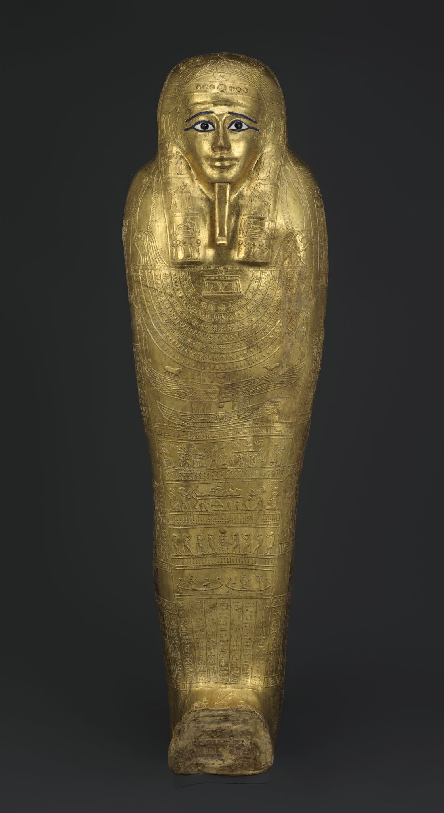
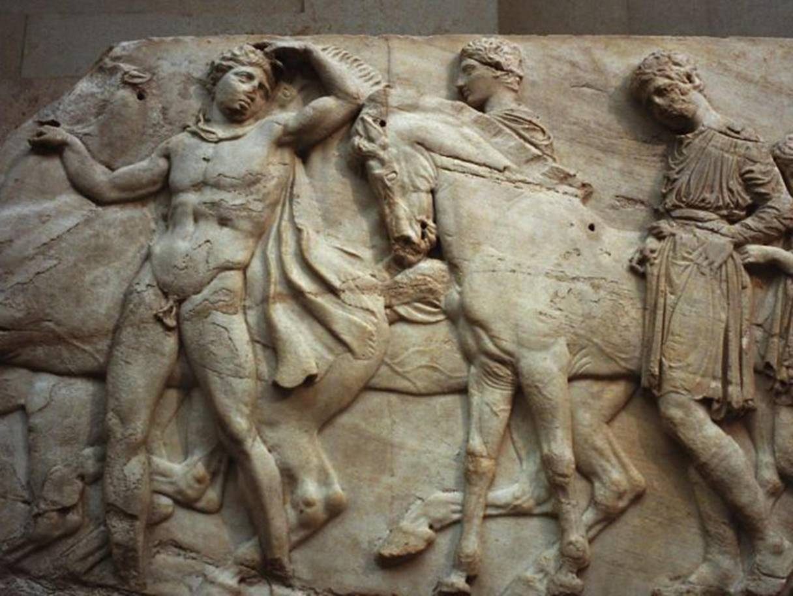

Museums are bastions of culture, they hold artifacts from all over the world. These artifacts hold different meanings to different people and some want their artifacts repatriated. Restitution is defined by Merriam Webster as “the restoration of something to its rightful owner.” Many authors have explored the impacts restitution has had on art, museums, culture and the party making the return request. However, there is no universal approach. This framework is the main portion of the visualization and proposes four pillars: Symbolism, Legality, Morality, and Preservation. Then we will apply it to a sample of the MET's (Metropolitan Museum of Art in New York City) collection, as a test of reproducibility.
Lately, there's been a push to return artifacts that have been
taken through colonization. In November 2018, France announced
it would return thousands of artifacts taken during their
colonial period. Startlingly,
90% of Africa's heritage currently lies outside the
continent.
Note: Restitution and repatriation will be used
interchangeably throughout this visualization.
Click on to explore restitution cases worldwide.
Repatriated Not Repatriated
This way to view the four pillars that make up the repatriation model.
|
Does the item represent a religious symbol?
Symbolic Value? Group Value? Importance to national or community pride? Symbolism |
Was the item taken in a consensual manner?
Was the art acquired during looting? Is the ownership the result of imperialism?  Legality |
Will the item be preserved?
Is the item reproducible? What is the Material Risk Assessment? What is the Conflict Zones Assessment? Preservation |
Is there a power imbalance between the requestor and the
requestee?
What's the argument from the court of public opinion? Part of the public's discussions?  Morality |
This artifact has a cumulative score of 15.
The repatriation model likely picked up on this item because
it meets the Preservation KPI's material assessment as a stone
sculpture and the geographical location of where this item was
made, Canada. The Inuit were historically marginalized so this
meets the Legality KPI.
The provenance of this item is not entirely clear. On the
MET's website it says: "Said to be from: Port Harrison
(Inukjuak) James A. Houston, New York, until 1969".
This artifact has a cumulative score of 10.
The repatriation model considered this item to be contentious.
Likely because it's an item from an Tlingit indigenous people
and for this symbolic meaning. The description on the MET's
site describes this item as: "This malevolent mask manifests a
powerful spirit being that helped a shaman mediate between the
worlds of matter and spirit".
This artifact has a cumulative score of 16.
The model picked up on a few American items, which makes sense
considering how the metrics were combined. Items in North
America scored higher. Not everything is required to be
repatriated if the item makes sense in its current location.
For this model, the Symbolism metric was calculated by binary scoring any object name within the "Object Column" in the dataset that had any naming convention with a reference to funerary, marriage, armour/war or ceremonial meaning as 1.
The legality metric was calculated by scoring any item within the "Culture" columnin the dataset that had a culture identified as "peoples" or a historically marginalized community as 1, while the rest of the items were scored as 0.
The preservation metric is a combination of two parts, the
materiality score and the risk assessment score. The
materiality portion was calculated by assessing the strength
of the material the artifact is made from. Materiality scale was measured as such: Clay = 1
Wood = 2 Ivory & Bone = 3 Stone = 4 Metals = 5. The logic behind this is the stronger
the material, the easier the artifact would be to return
without damage from transport or the elements.
The risk assessment score was calculated from the
Peace Index Scale, spcifically their regional scale from
most safe region to unsafest region. Regional scoring:
Europe = 1 North America = 2 Asia-Pacific = 3 South America
= 4 Central America & caribbean = 5 Sub-Saharan Africa = 6
Russia & Eurasia = 7 South Asia = 8 Middle East & North
Africa = 9
The safer the region, the less risk of damage to the
artifact in the midst of transportation and relocation.
Morality refers to the opinion of the general public on the item in question by looking at Google Searches over a period of time. This way we can assess if an item is top of mind for the region and part of the overall public's discussions. If the Google search shows a higher search rate (>1000), then the item is given a score of 1, if not, it is scored as 0. However, in this particular model, the Morality metric was not applied. This metric can always be applied if deemed appropriate for the situation to provide further context.
In the 18 and 19 centuries, increasingly unequal global power relations enabled European countries to accumulate huge numbers of cultural artifacts which found their way into their burgeoning museums. Ethnographic museums, in particular, have been the keepers of other people’s cultures, imposing their own classifications and interpretations onto objects from different peoples around the world: indigenous groups almost never had a voice. This model is intended to be a conversation starter. Ideally, becoming a neutral voice in the repatriation discussions. Museums are a reflection of society at large and should not hold objects that have a contentious nature as part of their provenance. Museums and Restitution: New Practices, New Approaches (pp. 2-3). Taylor and Francis. Kindle Edition. The model was a success in terms of its ability to bucket the samples into 4 distinct "shelves" and that it chose the appropriate items for those buckets. This framework is not intended to diminish past or present repatriation efforts. Museums are a reflection of society at large and provide a great service. As societies try to atone for past behaviours on marginalized communities, fairer museums are an important part of writing past wrongs.